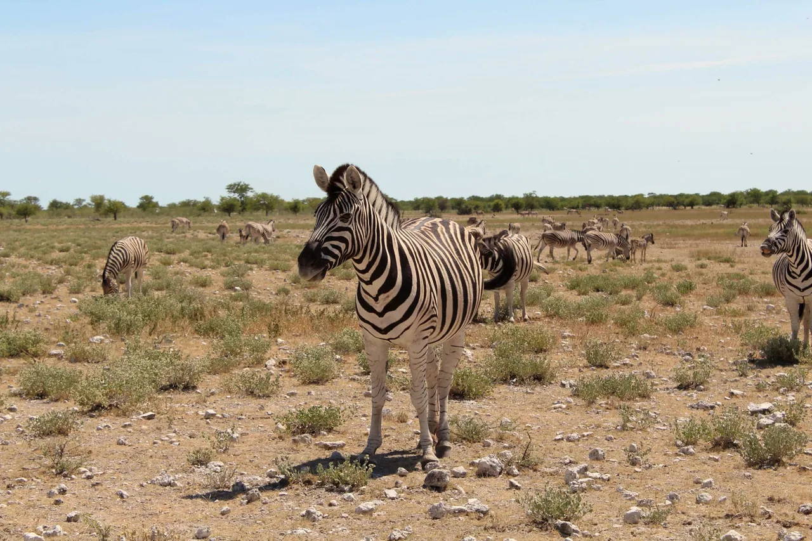
Départ confirmé17 jours
CompletMai 2027 (dates à définir)Namibie intégrale
3 600 €base 3 personnes
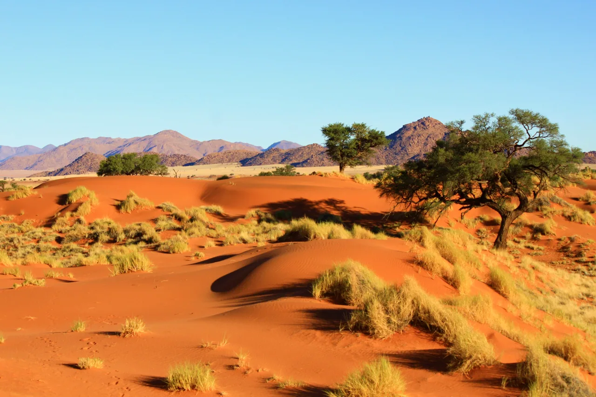
Un tour de 14 jours, dont 12 nuits sur place, pour découvrir la Namibie du Kalahari à Etosha, en véhicule 4x4 équipé, avec un accompagnateur francophone du début à la fin du séjour.
L’itinéraire relie le désert du Kalahari au désert du Namib (Sesriem, Sossusvlei, Deadvlei, dune 45), la côte atlantique, le Spitzkoppe et le Brandberg, une pause à la ferme familiale d’Okatare, le parc national d’Etosha et le plateau du Waterberg, avec une halte possible à la Cheetah Conservation.
La saison sèche, de mai à octobre, est idéale pour observer la faune. Départ confirmé : 25 février 2027.
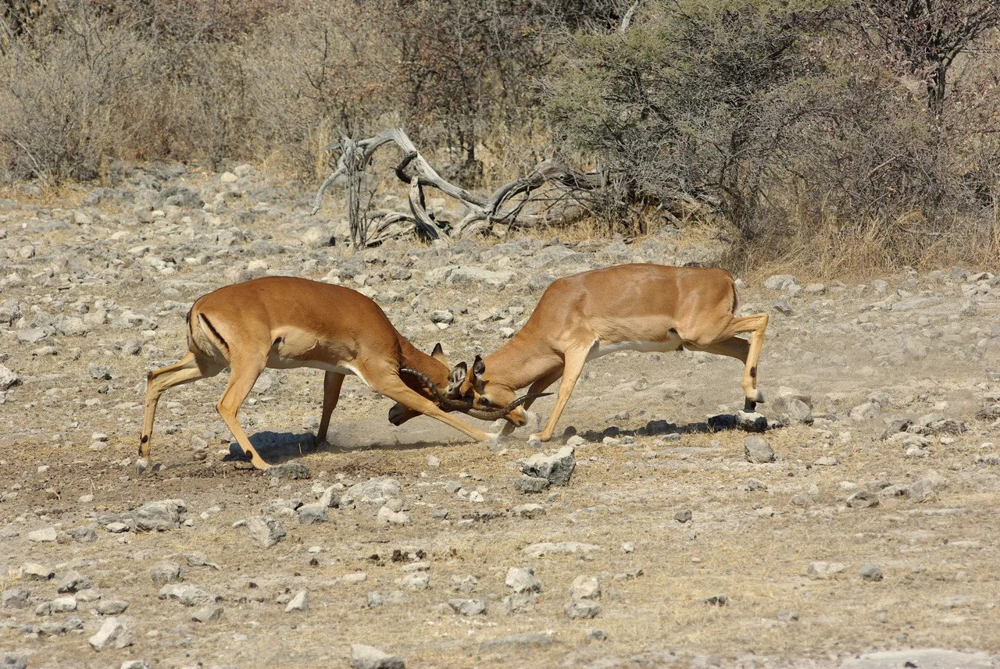
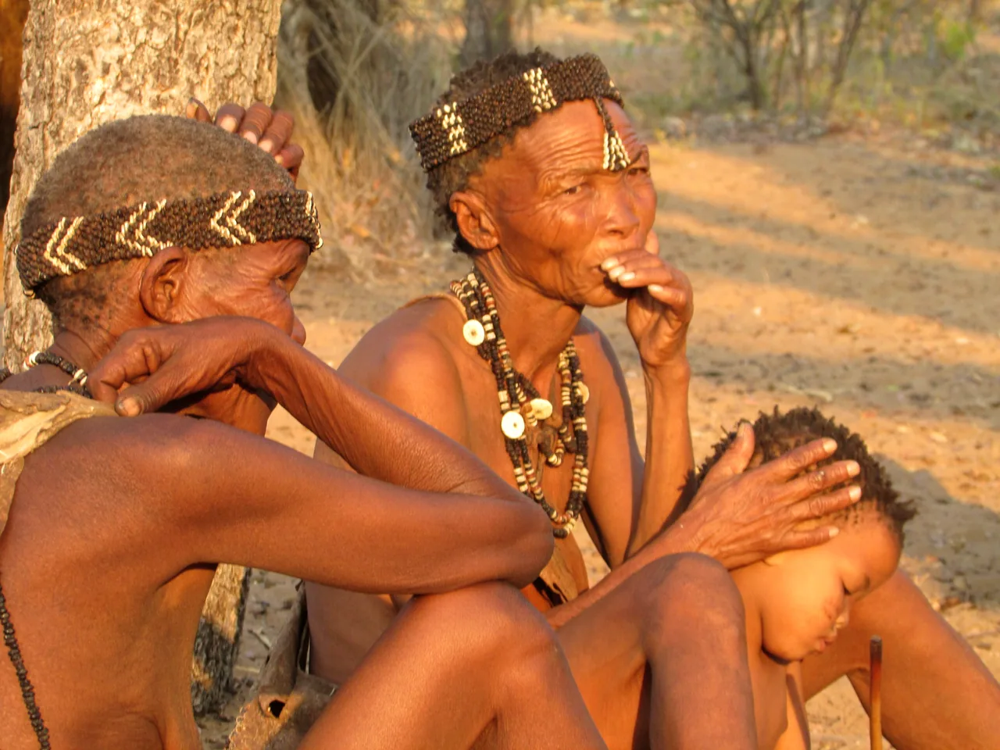
Faites défiler : la trace avance sur la carte, étape après étape, et le compteur additionne les kilomètres annoncés.
Carte illustrative, positions approximatives.
Départ depuis le domicile, vol vers Windhoek (non inclus).
Arrivée à l’aéroport international de Windhoek, achat d’une carte SIM locale et change sur place. Courses pour les jours suivants, puis installation. Nuit à l’Urban Camp à Windhoek.
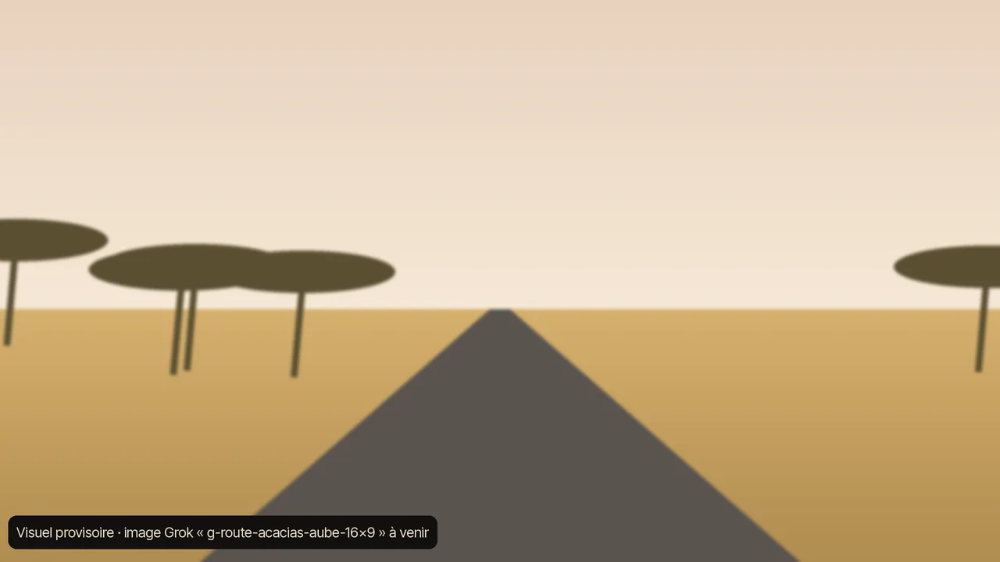
Direction le Kalahari (~285 km) par des routes aux paysages spectaculaires, avec possibilité d’observer quelques animaux du désert. Nuit en lodge au choix : Lapa Lange Game Lodge ou Gondwana Kalahari Anib Lodge, petit-déjeuner inclus.
Route vers l’Elegant Desert Lodge (~280 km), au plus près de l’entrée du parc de Sesriem. Après-midi de repos, puis réveil avant le lever du soleil pour une journée complète dans le parc : Deadvlei, Big Daddy, la dune 45… Nuits à l’Elegant Desert Lodge.
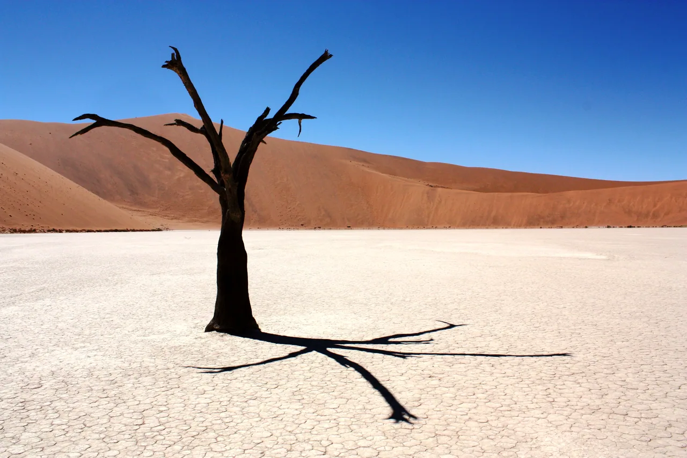
Départ pour Swakopmund en traversant le Naukluft (~365 km), avec arrêt pour observer les welwitschia et la faune du désert, puis découverte de la ville et de son marché artisanal. Le lendemain, excursion à Walvis Bay (~35 km) au choix : kayak ou bateau avec les otaries, Sandwich Harbour en 4x4, ou quad sur les dunes. Nuits au Desert Breeze Lodge.
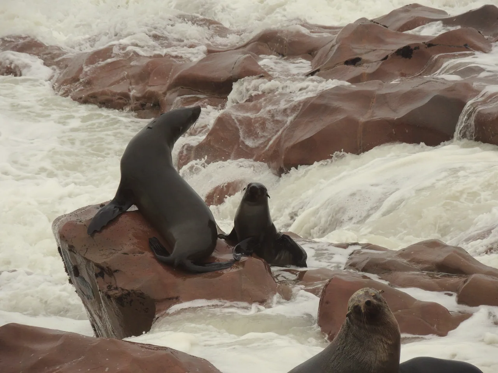
Départ matinal pour le Spitzkoppe (~280 km), montagne de pierre culminant à 1784 mètres, puis route jusqu’au Brandberg, plus haut sommet de Namibie (2573 m). Nuit en camping au Madisa Camp, petite oasis au cœur du désert.
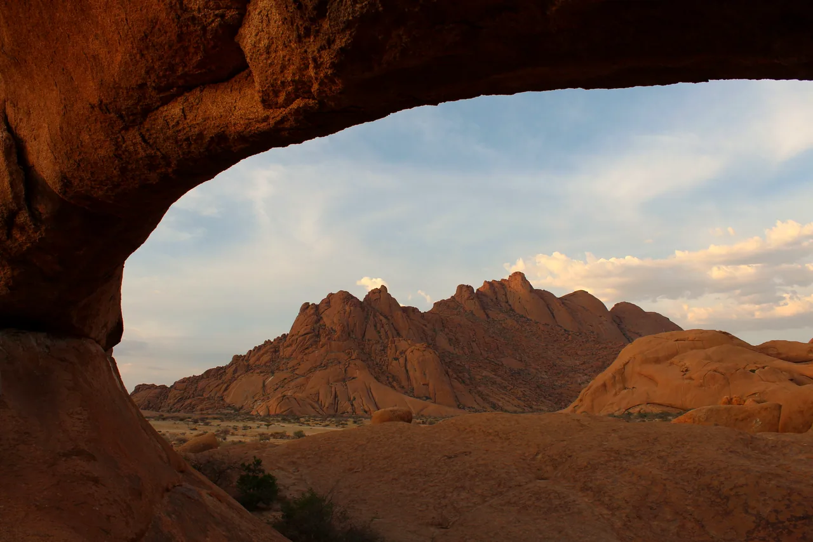
Route vers Okatare Farm (~100 km) pour deux jours de repos : faune de la ferme (gnous bleus, springboks, élans du Cap…), balade à cheval, piscine et jeux de société. Nuit en lodge privé, repas inclus.
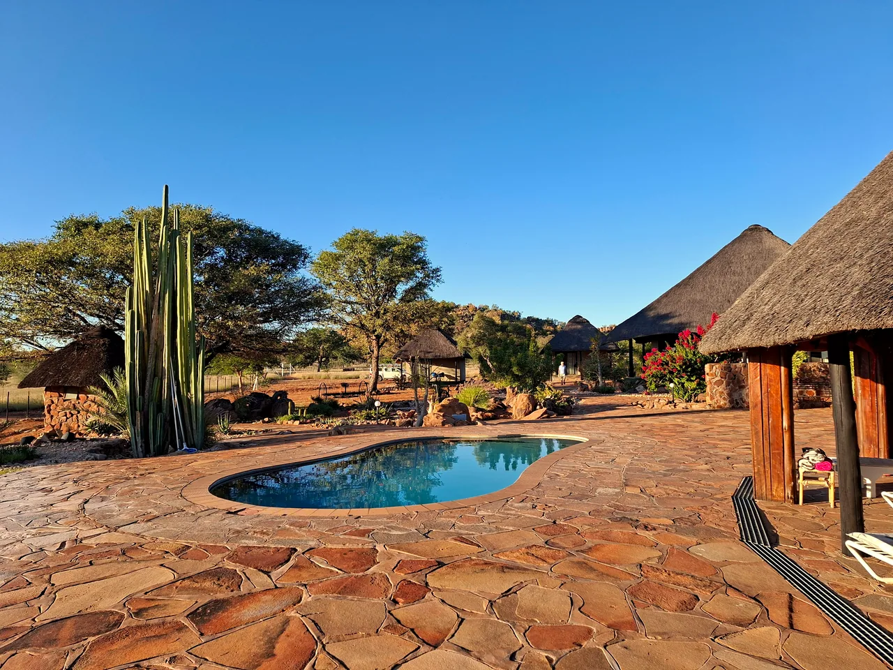
Départ matinal pour le parc national d’Etosha (~190 km) pour deux jours de safari en 4x4, à la recherche du Big Five, safari possible jusqu’au coucher du soleil. Nuits en camping à Etosha Village puis à Onguma Camp, avec possibilité de repas au barbecue.
Départ pour le plateau du Waterberg avec un arrêt possible à la Cheetah Conservation. Randonnée en fin d’après-midi pour gravir le sommet et profiter de la vue. Nuit au NWR Waterberg Wilderness Camp.
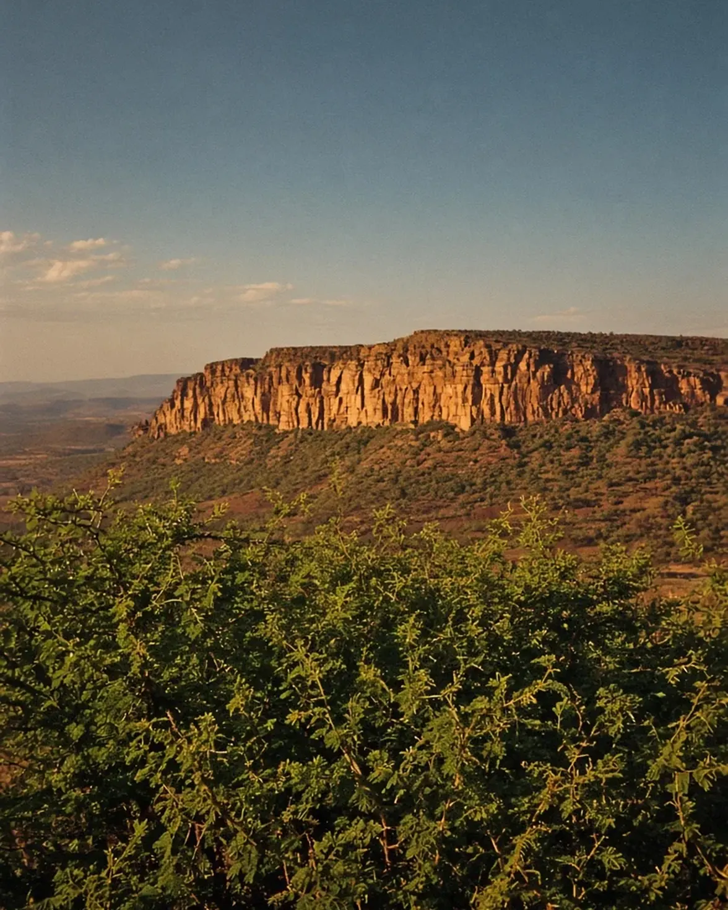
Départ pour l’aéroport selon les horaires de vol (~310 km), avec possibilité de passer par Windhoek pour les derniers achats. Restitution du véhicule, plein fait et propre, puis dépose à l’aéroport.
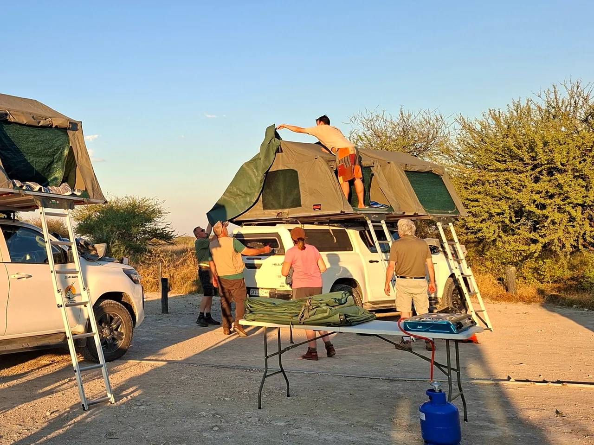
Un véhicule 4x4 équipé : tentes de toit, frigo et congélateur, matériel de camping et de cuisine pour 5 personnes, kilométrage illimité.
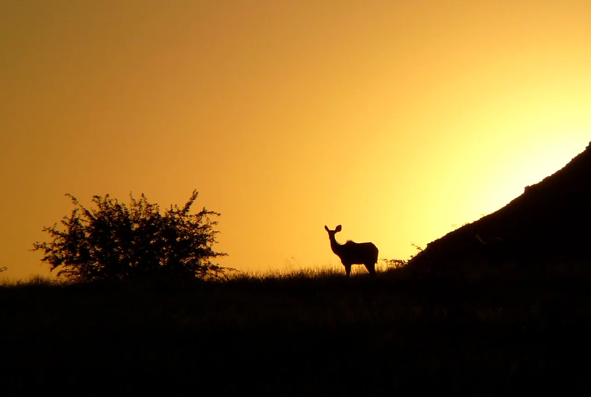
Un accompagnateur francophone vous accompagne du début à la fin du séjour, et notre équipe reste joignable pour toute question.

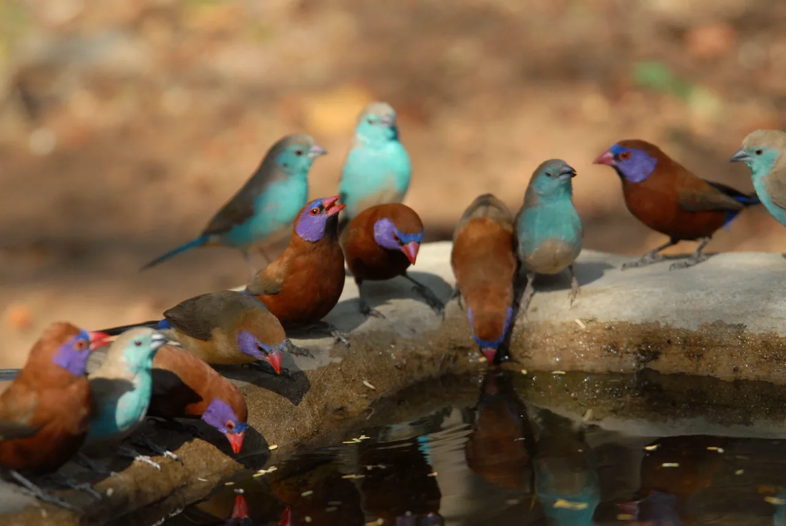
Chaque voyage commence par un message, un appel, une envie de découvrir. Que votre projet soit encore à définir ou déjà précis, nous vous aidons à donner forme au voyage que vous imaginez vraiment.
La Croix du Sud brille au-dessus du ciel animé, telle qu’on la voit depuis la Namibie.
Promenez la lampeGlissez le doigt : combien d’éléphants vous observent ? 0 / 6
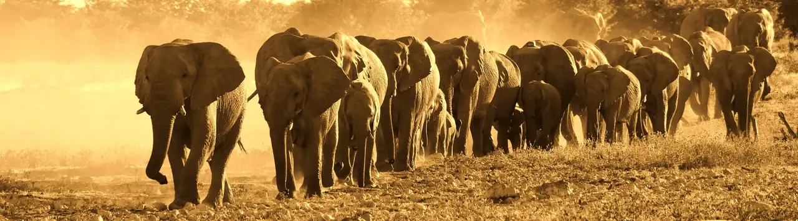